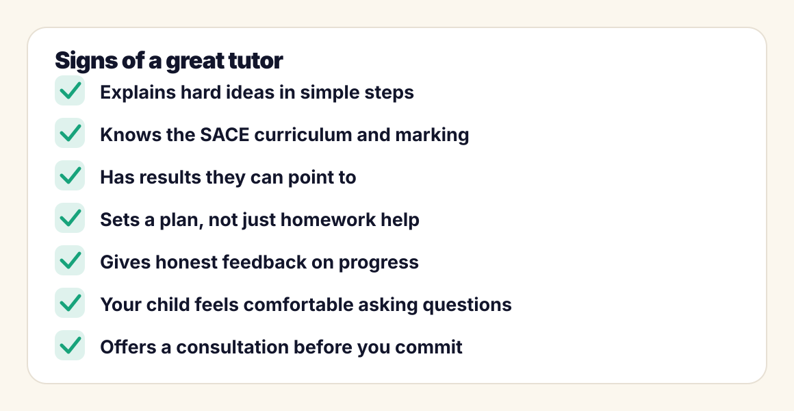

Tutoring · Adelaide
How to Choose the Right Tutor in Adelaide

Adelaide has hundreds of tutors, from university students advertising on noticeboards to established centres. Prices vary, formats vary, and quality varies most of all. Choosing well is not about finding the most qualified person on paper; it is about finding the person who will actually move your child forward. Here is how to tell the difference before you spend a dollar.
1. Subject knowledge is the entry ticket, not the whole answer
A tutor must know the subject deeply, and for senior students that means knowing the SACE curriculum specifically: what the performance standards reward, how school assessment and external assessment split, and what markers look for in each question type. A brilliant mathematician who does not know how SACE Mathematical Methods is assessed will teach interesting maths that does not convert into marks.
When you speak with a prospective tutor, ask what they know about the specific subject outline. The difference between a subject expert and a curriculum expert shows up within one question.
2. Clarity beats complexity
The best tutors make hard things feel simple; weak tutors make simple things feel hard. A tutor who truly understands a topic can break it into steps a struggling student can follow, and can explain the same idea three different ways when the first way does not land.
There is an easy test: in a first session or consultation, have the tutor explain the topic your child finds hardest. If your child's reaction is "oh, that actually makes sense", you have learned more than any brochure will tell you.
3. Look for structure, not just help with tonight's homework
Homework help feels useful in the moment, but it leaves the student dependent. Strong tutoring runs on a simple loop: diagnose what the student can and cannot do, plan the coming weeks around it, practise with well-chosen questions, and review what the results say. Ask any prospective tutor how they decide what to cover next; if the answer is "whatever the student brings along", expect slow progress.
4. Ask for evidence of results
Anyone can claim to be a great tutor. Fewer can point to outcomes. Ask what results their recent students achieved, and whether they can share reviews or references. We publish ours: in 2025, every TopMark student finished above a 90 ATAR, with a top result of 99.80 and three SACE Merits. You can see the full list on our results page. Whoever you consider should be able to show you something equivalent, even informally.
5. The personal fit matters more than parents expect
Students learn from people they are comfortable with. A student who is afraid to say "I still don't get it" will nod along and learn nothing. In a trial session, watch for whether your child asks questions freely. If they do, the relationship will work; if they sit silently for an hour, keep looking, no matter how impressive the tutor's credentials are.
6. One-on-one or group classes?
Group classes are cheaper per hour and suit confident students who mainly want extra practice and exposure to exam-style questions. One-on-one tutoring is more efficient per hour of actual learning, because every minute is aimed at that student's gaps, and there is nowhere to hide. For students who are behind, anxious, or chasing top marks in Year 12, one-on-one is usually the better investment.
7. Online or in-person?
Both formats work in Adelaide, and many families mix them. In-person can help younger students focus. Online saves travel, makes scheduling easier around sport and work, and lets you choose a tutor on quality rather than suburb. What matters most is consistency: a weekly rhythm the student can rely on.

Questions to ask before you book
- Which SACE subjects do you tutor, and how recently have you taught them?
- How do you work out what a new student needs first?
- What does a typical session look like, and what happens between sessions?
- What results have your recent students achieved?
- How will you keep us informed about progress?
- Can we do a consultation or trial session before committing?
Red flags to avoid
- Guaranteed marks or ATARs. No honest tutor can guarantee a specific result.
- No plan. If every session is improvised, progress will be too.
- No feedback to parents. You should never wonder what is happening in sessions.
- Long lock-in contracts before any evidence the tutoring works for your child.
- One teaching style for every student. Explaining things one way, louder, is not tutoring.
What should tutoring cost in Adelaide?
Rates vary widely with experience, level and format. University students at the entry level charge the least; experienced SACE specialists and small firms charge more, particularly for Year 11 and 12. Rather than shopping on price alone, compare what sits behind the rate: curriculum expertise, session structure, feedback, and results. An inexpensive tutor who produces no change is the most expensive option of all.
What progress should look like
Within the first few weeks of good tutoring you should see the student attempting homework independently, asking better questions, and walking into tests calmer. Within a term, marks should move. If nothing has changed after six to eight weeks, raise it with the tutor; a good one will adjust the plan, and a great one will have raised it with you first.
FAQs from Adelaide parents
How often should tutoring sessions be?
For most students, one focused session per week per subject is the sweet spot, with structured work set between sessions. Twice-weekly sessions make sense in the lead-up to exams or when a student is catching up on significant gaps.
When is the best time to start tutoring?
Earlier than most families think. Starting at the beginning of the year, or the moment marks begin to slip, is far more effective than starting three weeks before exams. In Year 12 especially, school assessment counts towards the final grade from term 1, so early support protects marks that already matter.
How do I know if my child actually needs a tutor?
Common signs include marks drifting down over a term, homework taking much longer than it should, growing anxiety before tests, or a student who says they understand in class but cannot do questions alone at home. A good consultation will honestly assess whether tutoring is needed at all.
How long does it take to see results from tutoring?
Confidence usually improves within two to three weeks. Measurable mark improvements typically show within four to eight weeks, depending on how frequently assessments come around. Be cautious of anyone promising overnight jumps.
Is online or in-person tutoring better?
Both work well when the tutor is good and sessions are consistent. In-person suits students who focus better with someone beside them; online removes travel time and widens your choice of tutors. The quality of the tutor matters far more than the format.
Looking for tutoring in Adelaide?
Book a free consultation with TopMark Tutors. We will discuss your child's subjects, goals and current results, and give you an honest view of what support would help, even if the answer is that they do not need us yet.
Book Free Consultation